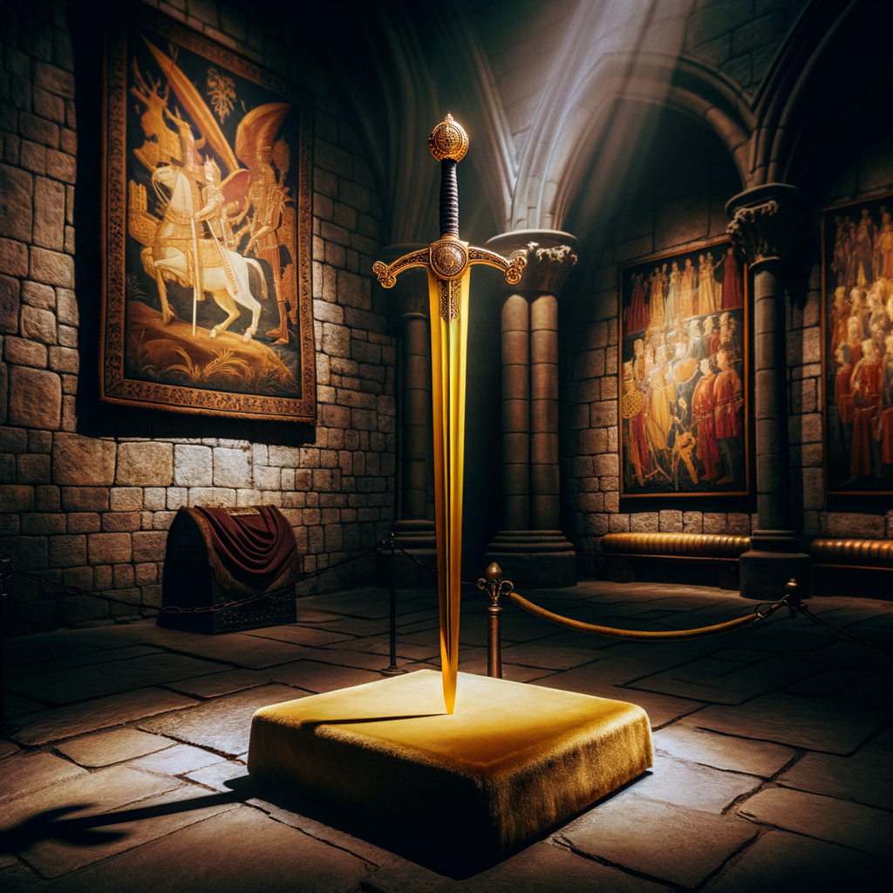
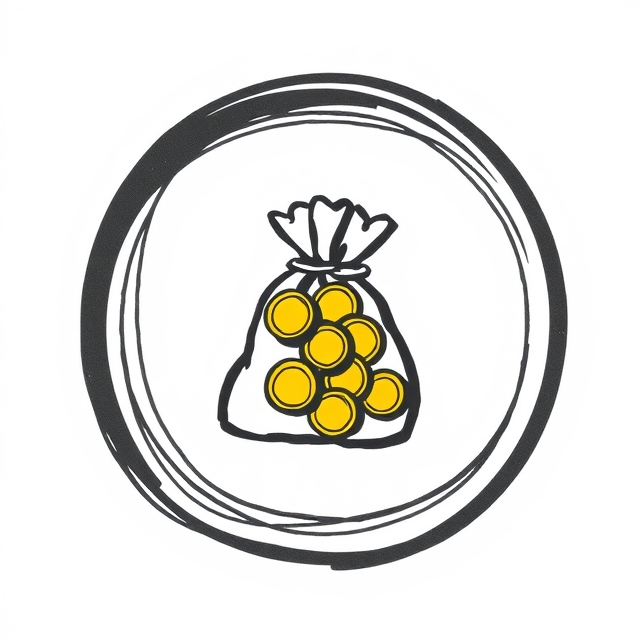

The Fallen
Ancient Beings of Sin
Malachi the Fallen Star
Sinbound Weapon

Imperius
Cult of the Sun

A cult that worships Malachi, the Fallen of pride, believing that those who possess the greatest qualities—intelligence, strength, beauty—are destined to rule over others. They believe in the inherent superiority of the chosen and seek to establish a hierarchy that elevates them above the common folk, viewing themselves as divinely ordained leaders.
Istar the Soul Breaker
Sinbound Weapon

Calytrix
Cult of the Heart

This group worships Ishtar, the Fallen of lust, and teaches that true enlightenment comes through the pursuit and surrender to desire. They believe that by indulging in every form of pleasure—sexual, emotional, and material—they can transcend earthly constraints and achieve divine unity with the Fallen.
Lucius the Rage Sovereign

Sinbound Weapon

Havoc and Fury
Cult of the Flame

A violent and vengeful cult that follows Lucius, the Fallen of wrath. They believe that anger is a righteous force, capable of purging corruption and bringing about justice. To them, vengeance is sacred, and they view those who wrong them as deserving of brutal retribution, often using violence to settle all matters of honor and pride.
Seraphina the Emerald Whisper
Sinbound Weapon
Serakar
Cult of the Serpent
Worshiping Seraphina, the Fallen of envy, this cult believes that only by destroying what others cherish can one find true fulfillment. They teach that jealousy is a divine gift, allowing them to tear down those they covet and gain power through the ruin of others. Their practices often involve deception, betrayal, and sabotage.
Ravenna the Dark Collector

Sinbound Weapon

Obelus
Cult of the Coin

This group reveres Ravenna, the Fallen of greed, and believes that accumulating wealth, power, and possessions is the ultimate form of spiritual enlightenment. They view the pursuit of material gain as a sacred duty, seeking to control the flow of wealth and resources to shape the world according to their desires.
Morrigan the Languid Corruptor
Sinbound Weapon
Somnus
Cult of the Moon

Followers of Morrigan, the Fallen of sloth, they believe that true peace and enlightenment come not through action but in complete detachment from ambition and worldly pursuits. They advocate for a life of quiet contemplation, rejecting the struggles and demands of society, and believe that inaction is a form of purity.
Azulon the Insatiable Tempest
Sinbound Weapon
Vorago
Cult of the Void

This cult worships Azulon, the Fallen of gluttony, and believes that consumption is the path to transcendence. They see no limit to their needs, whether in food, drink, or indulgence, and believe that by continuously consuming, they can achieve immortality and divine favor, finding spiritual fulfillment in endless excess.